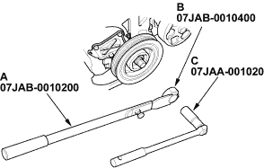
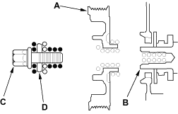
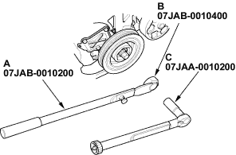

Special Tools Required
- Handle, 07JAB-0010200
- Pulley holder attachment, HEX 50 mm, 07JAB-0010400
- Socket wrench, 19 mm, 07JAA-0010200
Removal
- Remove front tyres/wheels.
- Remove the splash shield (see step 21 on page 5-6).
- Hold the pulley with handle (A) and holder attachment (B).

- Remove the bolt with a 19 mm socket (C) and breaker bar.

Installation
- Clean the crankshaft pulley (A), crankshaft (B), bolt (C) and washer (D). Lubricate as shown below.
 : Lubricate
: Lubricate

- Install the crankshaft pulley and hold the pulley with handle (A) and holder attachment (B).

- Tighten the bolt to 245 Nm (25.0 kgf/m, 181 lbf/ft) with a torque wrench and 19 mm socket (C). Do not use an impact wrench.
- Install the splash shield (see step 18 on page 5-14).
- Install front tyres/wheels.